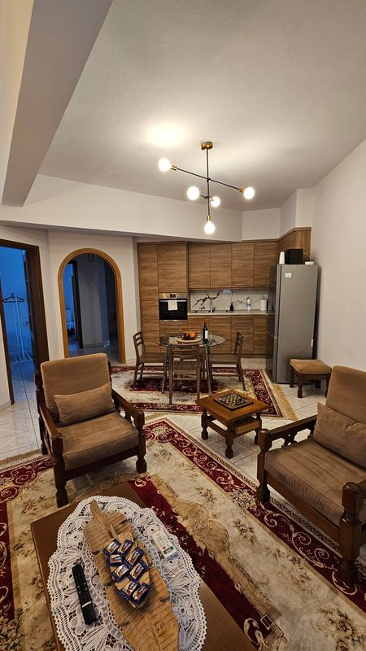

O smeštaju
do 8 osoba · 3 spavaće sobe · 4 kreveta · 2 kauča na razvlačenje · 1 kupatilo · 110 m²
Prostrana kuća od 110 m² u centru Sjatiste, pored trga, sa restoranima, kafićima i pekarom na nekoliko koraka. Idealna za porodice i društva.
Veliki dnevni boravak sa tradicionalnim drvenim nameštajem, kaučem na razvlačenje, velikim televizorom, klima-uređajem i šahom za večeri. Pored njega trpezarija i potpuno opremljena kuhinja sa rernom, pločom za kuvanje, frižiderom, mikrotalasnom i aparatom za kafu.
Tri spavaće sobe sa televizorom: dve sa bračnim krevetom, jedna sa dva kreveta za jednu osobu i foteljom na razvlačenje.
Veliko kupatilo sa kadom, mašinom za veš, peškirima i kozmetikom.
Sadržaji
- Wi-Fi
- Klima-uređaj
- Grejanje
- Televizor
- Potpuno opremljena kuhinja
- Nespresso aparat
- Aparat za filter kafu
- Rerna i mikrotalasna
- Mašina za veš
- Kauč na razvlačenje
- Posteljina
- Peškiri za kupanje i lice
- Šampon i gel za tuširanje
- Poklon dobrodošlice: vino, keks i kafa
- Parking
- Kućni ljubimci na zahtev
- Bebi krevetac besplatno
Lokacija
3 Pigadia Square 19, 503 00 Siatista